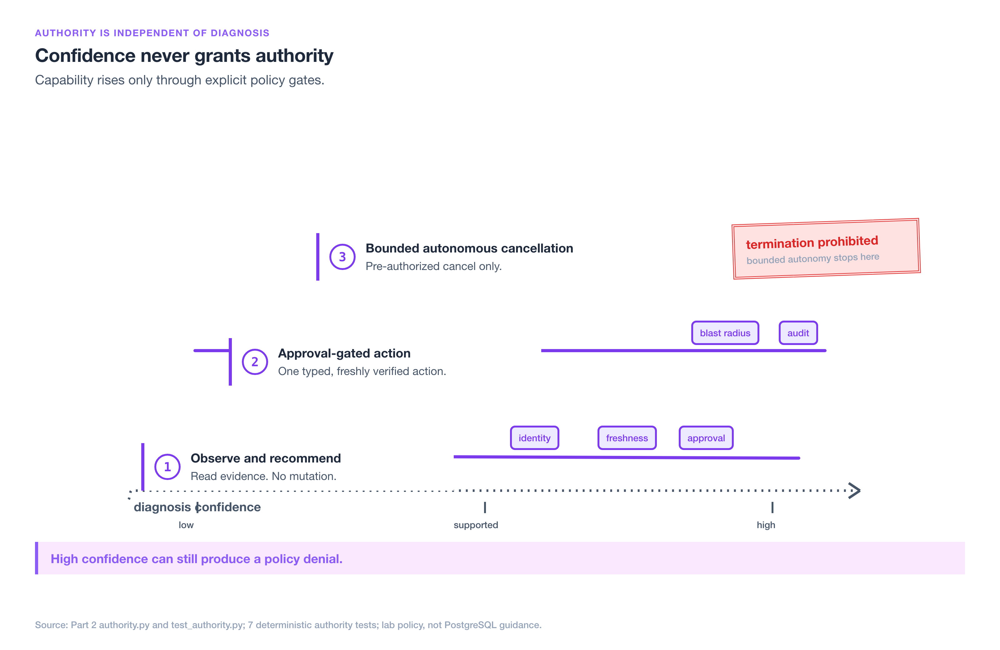
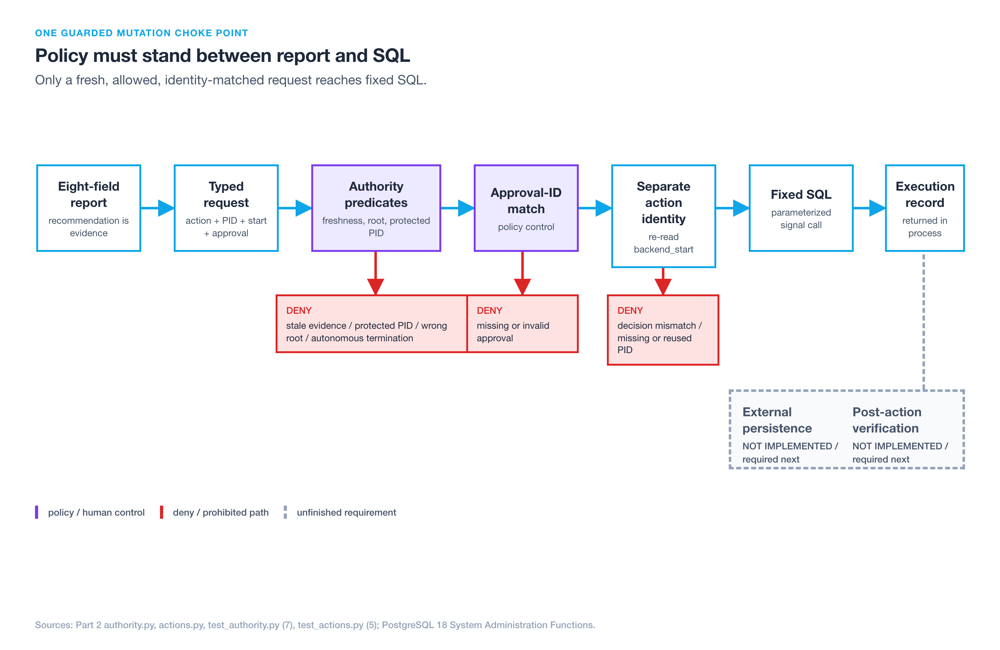
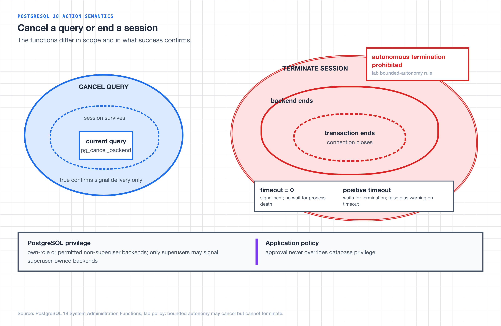
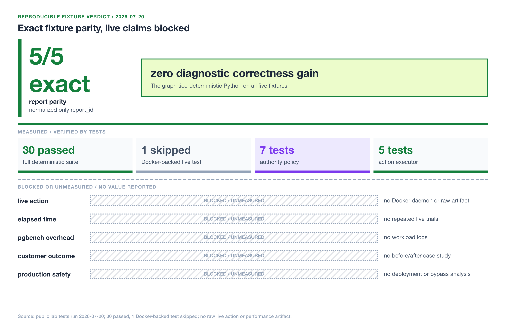

Two-part series: Part 1: Find the Root Blocker · Part 2: Guard Lock Remediation
The incident report says cancel. The policy says no
The root blocker is session 101. The report has high confidence. Requests are timing out, and every second feels expensive. An operator approves cancellation, but more than five seconds have passed since collection. Session 101 has disconnected, and PostgreSQL may already have assigned that PID to a different backend. The right action is no action. A useful remediation system must be able to turn a confident diagnosis into a denial when the target, approval, or evidence no longer matches.
Part 1 built the read-only side: five evidence adapters produce the same eight-field incident report, and a diagnosis-only LangGraph identifies a root source without exposing mutation. Part 2 starts after that report exists. It asks whether one specific action is eligible now, then tests whether LangGraph adds diagnostic value over the same deterministic Python path.
My working rule for this lab is deliberately strict: a report may recommend an action, but only current identity, policy, and approval evidence can make that action eligible.
The evidence contract entering authority
Authority starts from the same bounded evidence contract, not from a fresh model guess. For an active blocking chain, the collector reads pg_stat_activity, pg_locks, and the queue-aware pg_blocking_pids() function. The adapter builds waiter-to-blocker edges, then computes candidate roots as all blockers minus all waiters. It refuses the classification unless exactly one root blocker remains. That rule distinguishes the session holding up the chain from the downstream query that happens to be most visible.
Every adapter emits eight fields: observation timestamp, classification, root source, supporting observations, confidence, recommendation, authority requirement, and audit record. Live blocking chains, retained deadlock errors, completed lock timeouts, queued DDL, and inferred hot-row contention take different evidence paths, but policy always receives that same report shape.
Two distinctions remain important at the action boundary.
Q9 asks how deadlocks differ from lock timeouts. Deadlock detection finds a cycle and PostgreSQL aborts a victim with SQLSTATE 40P01. A configured lock_timeout instead applies to each lock acquisition wait, while statement_timeout limits total statement execution. Once either event resolves, live views cannot reconstruct it; the report needs historical error and timing evidence.
Q10 asks how queued DDL can block later reads before its lock is granted. An ALTER TABLE request waiting for ACCESS EXCLUSIVE can sit ahead of later ACCESS SHARE readers in the wait queue, as shown in this reproducible queued-DDL example. The exact DDL lock mode varies by subcommand and PostgreSQL version, so the adapter verifies the observed mode rather than labeling every migration the same way.
These facts determine what the report may say. They still do not determine whether any action may run.
Diagnosis confidence is not mutation eligibility
A diagnostic report answers, “What does the collected evidence support?” An authority policy answers a different question: “May this identity perform this action against this target at this moment?” Keeping those dimensions independent closes Q6 from the series FAQ. A high-confidence report can still fail on six action conditions: configured authority, evidence freshness, protected targets, root-target match, approval, and action blast radius.
The lab encodes three authority levels in authority.py. These levels consume the same report. They do not change its classification or confidence.
d600bdd. The commit-pinned links preserve the reviewed implementation even if main changes later.
| Authority level | Permitted capability | Required boundary | Lab termination rule |
|---|---|---|---|
| Observe and recommend | Read evidence and return a recommendation | Diagnostic credentials are read-only and mutation stays outside the graph | Always denied |
| Approval-gated action | Execute one typed, freshly verified action | Valid approval ID, policy match, separate action connection, audit result | Eligible only under explicit approval and the remaining checks |
| Bounded autonomous action | Execute one pre-authorized cancellation | Fresh high-confidence evidence, root-target match, protected-PID rule, fixed allowlist | Always denied in this lab |
This ladder is intentionally conservative. Level 1 can produce a perfect report and still execute nothing. Level 2 does not approve “remediate the incident” as an open-ended goal; it approves a typed request containing one action, one positive PID, one expected backend_start, one request timestamp, and one approval ID. Level 3 is narrower than its name may suggest. It can cancel a current query only when every policy predicate passes. It cannot terminate a session.
Reversibility and blast radius explain that asymmetry. Canceling one current query leaves the backend session alive. Terminating a session ends it and can roll back its open transaction, release every lock it holds, and disrupt any application work attached to that connection. The lab therefore treats termination as too broad for bounded autonomy, regardless of diagnostic confidence.
The policy is also identity-aware. The diagnostic collector remains read-only; the action executor uses a separate connection boundary. The current lab models that separation in code rather than provisioning database roles, so it is not a production least-privilege guarantee. A deployment would still need distinct credentials and PostgreSQL grants for observation and signaling.

Authority rises through explicit gates, while bounded autonomy still prohibits session termination.
Put policy between the report and PostgreSQL
Q7 asks what prevents unrestricted or stale actions. The answer is not one prompt instruction. It is a chain of typed and independently testable boundaries: read-only diagnosis, a fixed action enum, fail-closed policy, fresh backend identity verification, parameterized SQL, and a returned execution record.
The diagnostic LangGraph does not own any part of that mutation chain. It remains the same single diagnosis node from Part 1. Actions live outside the graph behind the policy function and executor. This makes a report an input to authorization, not an implicit tool call. Adding an approval checkpoint to the diagnostic graph would blur that ownership boundary before the workflow has earned the extra complexity.
Step 1: construct one typed request
The request schema in authority.py forbids extra fields and freezes the accepted values:
class ActionRequest(BaseModel):
model_config = ConfigDict(extra="forbid", frozen=True)
action: DatabaseAction
target_pid: int = Field(gt=0)
expected_backend_start: datetime
requested_at: datetime
approval_id: str | None = NoneDatabaseAction contains exactly two members: cancel_query and terminate_session. There is no arbitrary SQL field, natural-language command, DDL option, or transaction-control tool. The model can recommend an action in a report, but it cannot expand the executor’s vocabulary.
expected_backend_start matters as much as target_pid. A PID identifies a server process at one point in time, not a permanent session identity. If the original backend exits and PostgreSQL later reuses its PID, targeting by PID alone can signal unrelated work. The request therefore carries the backend start time observed for the diagnosed session, which the executor must match again at the last possible moment.
Step 2: evaluate every predicate and fail closed
The policy implementation is deliberately deterministic. It checks the report and request in a fixed order:
if policy.level is AuthorityLevel.OBSERVE:
return "observe authority cannot execute database actions"
if report.confidence is not Confidence.HIGH:
return "action requires a high-confidence diagnostic report"
if request.requested_at - report.observation_timestamp > policy.max_evidence_age:
return "diagnostic evidence is stale"
if request.target_pid in policy.protected_pids:
return "target PID is protected"
if report.root_source != f"session {request.target_pid}":
return "target PID is not the diagnosed root blocker"The default evidence-age limit is five seconds. That is a lab policy choice, not a PostgreSQL recommendation or a universal incident threshold. The important behavior is the comparison: once the request falls outside the configured age, the policy denies it instead of lowering a score and proceeding.
Protected PIDs provide a direct exclusion list for sessions that policy must not touch. Root-target matching prevents a request from switching the diagnosed session after approval. The approval-gated level then requires the request’s approval_id to appear in approved_request_ids. The policy checks the ID, not whether a chat message happens to contain the word “approved.” At bounded autonomy, the final predicate rejects every terminate_session request.
Seven policy tests in test_authority.py exercise observe-only denial, matching approval, stale evidence, wrong-root targeting, protected PIDs, autonomous termination, and low confidence. The tests demonstrate the configured in-process policy behavior. They do not prove that a production role, network path, or external approval store cannot be bypassed.
Step 3: revalidate identity, then execute fixed SQL
An allowed policy decision is necessary, but it is still not execution authority by itself. The executor in actions.py first verifies that the decision matches the request’s action and PID. It then re-reads the current backend identity with a parameterized query:
BACKEND_IDENTITY_SQL = """
SELECT backend_start
FROM pg_catalog.pg_stat_activity
WHERE pid = %s
AND backend_type = 'client backend'
"""
CANCEL_SQL = "SELECT pg_catalog.pg_cancel_backend(%s)"
TERMINATE_SQL = "SELECT pg_catalog.pg_terminate_backend(%s, %s)"If the row is gone or backend_start differs from expected_backend_start, execution raises ActionExecutionError before any signal function runs. This handles both a vanished target and PID reuse. Only an exact identity match reaches one of the two fixed statements. Parameters carry the PID and timeout; model output never changes the SQL text.
Five executor tests in test_actions.py pin the query order, fixed SQL, parameter tuples, positive termination timeout, denied-policy behavior, reused-PID refusal, and decision-request matching. Together with the seven policy tests, the measured deterministic authority and executor slice is 12 passing tests. The implementation also denies a missing PID, but that path does not have a dedicated assertion in the five-test executor suite.
The returned ActionExecution records the action, target PID, Boolean signal result, and verified backend start. That is an auditable executor result, but the current lab does not yet persist an immutable external audit log or perform a second post-action catalog read. Those are required before presenting the design as a production workflow. “Audit” and “post-action verification” are therefore architecture requirements here, not completed production capabilities.

One guarded mutation path separates diagnostic evidence from fixed SQL, with fail-closed denial and unfinished audit requirements shown explicitly.
Cancel a query or terminate a session
Q12 requires a precise distinction because these functions do not have the same effect or confirmation semantics. PostgreSQL 18 documents both in System Administration Functions.
pg_cancel_backend(pid) sends a request to cancel the backend’s current query. The session remains connected and can run later statements. In an incident, this is the narrower candidate when the harmful unit is the current statement and the application can handle its failure. A true result means PostgreSQL successfully sent the signal. It does not mean the application request recovered, the transaction was cleaned up as intended, or service latency returned to normal.
pg_terminate_backend(pid, timeout) ends the backend session. Termination has a larger blast radius because the connection and its transaction end. The timeout changes what a successful result confirms. With timeout = 0, PostgreSQL returns after successful signal delivery without waiting for the process to terminate. With a positive timeout, PostgreSQL waits for termination up to that interval; if the process is not terminated in time, the function returns false and emits a warning. The lab executor rejects non-positive values and defaults to 5,000 milliseconds so it cannot mistake signal delivery for confirmed termination.
Both functions are privilege constrained. A superuser can signal any backend. A role can signal its own backends, and members of pg_signal_backend can signal other non-superuser backends. Members of pg_signal_backend cannot signal a backend owned by a superuser; only another superuser can do that. Policy approval does not override PostgreSQL privileges, and PostgreSQL privilege does not replace application policy. Both checks must pass.
The decision rule is therefore narrow:
- Prefer no mutation when evidence is stale, incomplete, low-confidence, or no longer identifies the same root backend
- Consider cancellation when one current query is the intended target, policy allows it, approval is valid when required, and fresh identity checks pass
- Consider termination only in a disposable lab or under a separately approved production policy that accepts the session-level blast radius
- Never allow bounded autonomous termination in this lab
The deterministic tests verify statement selection and denial logic. Docker was unavailable on 2026-07-20, so no live PostgreSQL cancellation or termination was executed. There is no raw action artifact and no basis for claiming that either operation succeeded against PostgreSQL in this evaluation.

Cancellation targets the current query; termination ends the session and remains outside this lab’s bounded-autonomy policy.
Measure the agent against the same deterministic path
An orchestration framework should not receive credit for work already performed by deterministic SQL and Python. Q8 therefore requires a same-evidence control, not a comparison with an intentionally weaker script. The control in baseline.py calls the same mode adapter with the same evidence and observation timestamp, without LangGraph. Its comparison helper normalizes only the intentionally unique report_id in the audit record.
The parametrized comparison in test_baseline.py runs all five fixture modes. For each mode, it invokes the LangGraph path and the deterministic control, compares every report field after that one normalization, and asserts that the graph report still has exactly eight fields. The result was 5-of-5 exact parity on 2026-07-20.
That experiment answers correctness only within five deterministic fixtures. A complete evaluation should also compare repeated live scenarios on root-source match, report completeness, elapsed time to a valid report, unauthorized action attempts, and workload impact. The opt-in test_live_postgres.py integration test is designed to create a two-hop blocking chain and compare the same two paths against PostgreSQL 18, but it is opt-in and was skipped because the Docker daemon was unavailable.
Reproducible scorecard
| Dimension | Result on 2026-07-20 | Evidence status | What may be concluded |
|---|---|---|---|
| Deterministic suite | 30 passed across test_report.py, test_collector.py, test_workflow.py, test_baseline.py, test_authority.py, and test_actions.py; 1 Docker-backed test skipped in test_live_postgres.py | Measured locally; no raw live artifact | The fixture, contract, policy, and executor tests pass in process |
| Same-evidence correctness | 5 of 5 fixture modes at exact report parity after normalizing only report_id | Measured by local test_baseline.py | LangGraph added zero diagnostic correctness in this fixture evaluation |
| Report contract | Both paths emitted the exact eight-field report in all 5 modes | Measured by local test_baseline.py | Orchestration did not improve fixture completeness |
| Authority policy | 7 tests passed | Measured by local test_authority.py | The configured fail-closed predicates behave as asserted in process |
| Action executor | 5 tests passed | Measured by local test_actions.py | Fixed SQL, parameterization, positive timeout, and identity checks behave as asserted with fakes |
| Live cancel or terminate | No result | Blocked; no Docker daemon and no raw artifact | No live action claim is permitted |
| Elapsed-time comparison | No result | Blocked; no repeated live trials or raw artifact | No speed claim is permitted |
| Collection overhead | No result | Blocked; no pgbench latency, throughput, or raw logs | No workload-impact claim is permitted |
| Customer outcome | No result | No customer before/after case study selected | No customer impact claim is permitted |
| Production safety | No result | No production deployment or bypass analysis | No production safety guarantee is permitted |
I reproduced the full deterministic count in the local standalone clone with the exact suite boundaries documented in its public README.md. The published deterministic suite is not a substitute for raw live artifacts. To complete the open cells, the lab needs a functioning disposable PostgreSQL 18 service, repeated trials, retained generated reports and action records, and pgbench runs lasting several minutes as recommended by the pgbench documentation.

Five exact fixture matches support a zero-gain result; live action, performance, customer, and production claims remain blocked.
The honest verdict: prefer deterministic Python today
Q15 asks what to conclude when the agent does not beat the baseline. Report the negative result without rescuing the original hypothesis. In this five-mode fixture evaluation, LangGraph added zero diagnostic correctness. Both paths used the same evidence, selected the same adapters, and produced the same eight fields in all five cases. For the current single-node diagnosis graph, deterministic Python is the simpler baseline. I would use it today.
This does not prove LangGraph has no value in a larger incident workflow. It identifies the point at which the framework would need to earn its complexity. Future requirements might include durable approval checkpoints, pause and resume, multiple human decisions, retry policy, or auditable workflow transitions. Those are orchestration problems. If they arrive, evaluate the framework against those requirements rather than retroactively calling exact diagnostic parity a win.
The controls that did earn their complexity are framework-independent: the eight-field report, typed requests, fixed action allowlist, five-second freshness policy, protected PIDs, root-target matching, approval IDs, positive termination timeouts, backend_start revalidation, and fail-closed tests. Keep those controls whether the surrounding workflow uses plain Python, LangGraph, or another orchestrator.
The conclusion must also preserve every abstention. This run produced no live cancel or terminate result, no elapsed-time comparison, no pgbench latency, throughput, or collection-overhead number, no customer before/after case study, and no production safety guarantee. Until raw artifacts exist, the evidence supports an in-process policy design and a negative fixture verdict. Nothing broader.
Pre-action checklist
Before one database-changing call, require all 10 checks:
- The diagnostic identity is read-only and cannot reach the action executor
- The report is high-confidence and names one root source
- The request contains one allowlisted action and one positive PID
- The evidence age is within the configured threshold
- The target PID is absent from the protected set
- The requested PID matches the report’s diagnosed root
- The approval ID is valid when the authority level requires approval
- Bounded autonomy is attempting cancellation, never termination
- The current
backend_startexactly matches the expected value - The executor will return the PostgreSQL result; before production use, the deployment must persist it and trigger post-action evidence collection
One failed or ambiguous check means deny. A policy that “usually” fails closed is not fail-closed.
Build it yourself: three guarded-remediation projects
Project 1 - Prove diagnosis cannot mutate (Beginner)
Goal. Run the read-only diagnosis and make a test prove that no cancel or terminate node is reachable from the LangGraph.
Prerequisites. Python 3.11 or later, uv, Git, and no PostgreSQL server.
Steps.
- Clone the public lab and run
uv sync --group dev. - Run
uv run --group dev pytest tests/test_workflow.py tests/test_baseline.py. - Inspect the graph-node assertion in
test_workflow.py. - Add a temporary mutation node to your local graph and rerun the workflow test.
- Remove the temporary node after the guard fails as designed.
Success signal. The unmodified tests pass, and the workflow test fails when the temporary mutation node makes the graph contain anything beyond __start__, diagnose, and __end__.
Time. 45-60 minutes.
Stretch goal. Add an assertion that the diagnostic connection factory can never construct PostgreSQLActionExecutor.
Start from. Use the diagnosis graph and its guard in workflow.py and test_workflow.py.
Project 2 - Extend the fail-closed policy matrix (Intermediate)
Goal. Add one new denial predicate and prove that it blocks approval-gated and bounded-autonomous requests without touching PostgreSQL.
Prerequisites. Project 1 complete and familiarity with Pydantic and pytest.
Steps.
- Read the predicate order in
authority.py. - Choose a bounded rule, such as an allowlist of permitted database users or a maximum number of affected requests supplied by trusted telemetry.
- Add the typed policy field with
extra="forbid"still enabled. - Add one passing case and at least two denial cases to
test_authority.py. - Run
uv run --group dev pytest tests/test_authority.py.
Success signal. The authority suite passes, and removing the new predicate causes both new denial tests to fail.
Time. 2-3 hours.
Stretch goal. Serialize every PolicyDecision to an append-only local audit file and test that denied decisions are recorded as well as allowed decisions.
Start from. Extend authority.py and its seven-test boundary in test_authority.py.
Project 3 - Complete the live action and measurement harness (Advanced)
Goal. Produce the raw artifacts this draft lacks: live cancellation and termination results, repeated elapsed-time comparisons, and diagnostics-on versus diagnostics-off workload measurements in a disposable PostgreSQL 18 environment.
Prerequisites. Projects 1-2 complete, Docker, PostgreSQL client tools, pgbench, and a weekend. Never point this project at production.
Steps.
- Start the temporary PostgreSQL 18 service from
compose.yaml. - Extend
test_live_postgres.pywith approval-gated cancellation and termination fixtures that assert the expected backend identity before and after each action. - Run repeated same-evidence baseline and LangGraph trials, recording fixture, timestamps, reports, action decisions, and execution results for every run.
- Run several-minute
pgbenchtrials with identical seed, scale, clients, and duration, first with diagnostic collection disabled and then enabled. - Retain per-transaction logs and publish a script that calculates latency, throughput, failure, and collection-overhead deltas from the raw files.
- Rerun the full suite and document negative or null results without filtering them out.
Success signal. One command regenerates the raw action records, repeated baseline comparison, two pgbench log sets, and a machine-readable summary; the full test suite passes with the live test no longer skipped.
Time. One weekend.
Stretch goal. Add a durable approval checkpoint outside the diagnostic graph, then compare its transition and recovery behavior with a plain Python state machine before choosing an orchestrator.
Start from. Build on actions.py, test_actions.py, and the opt-in test_live_postgres.py.
Start with the guard that can fail
I would build Project 1 first. Clone the postgres-lock-agent-lab workflow, run its diagnosis-only graph test, then add a temporary mutation node and watch the guard fail. That red test is the first useful result: it proves the boundary exists before you grant a PostgreSQL role permission to signal anything.
Continue the series: Read Part 1: Find the Root Blocker.